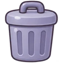
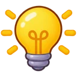

⛶ 全螢幕
點自己的座號，開始練習！
六年一班
601 學習平台
第 1 題

：

提示
看解答
下一題 ▶
← 回平台
👩🏫 老師設定
⚔️ 本週全班打魔王
🔄 重新整理
📊 班級儀表板
本週
最近 7 天
最近 30 天
全部
🔄 重新整理
📥 匯出 Excel
選好 ① 的 pins.json 以後，這裡會自動顯示全班的狀況
① 開通密碼（只要做一次）：選擇 pins.json
寫入雲端
🔑 學生自己設的密碼（學生忘記時來這裡看，或按「重設」讓他用老師發的密碼重新設）
查看
🌅 早自修分組
讀取
儲存
📂 匯入分組檔
沒設定的學生是「一般」：每天 1 篇閱讀測驗＋數學計算，共 10 題。「學扶」可以數學、國語分開設，再勾要練的題型（都不勾＝全部題型）。
設定存在每位學生自己的雲端資料裡，同學看不到；網站的程式裡不會有任何人的分組。
② 全班練習紀錄
重新整理
③ 學習分析
最近 7 天
最近 30 天
全部
分析
④ 榮譽卡加點（看完成每日任務的天數）
每完成 1 天 ＋
點，每週最多
點
上週
本週
計算
📋 複製
⑤ ♟️ 對戰紀錄（軍棋・暗棋・大砲對轟・大砲混戰）
讀取
← 回登入畫面
📖 看一題例子
下一步 ▶